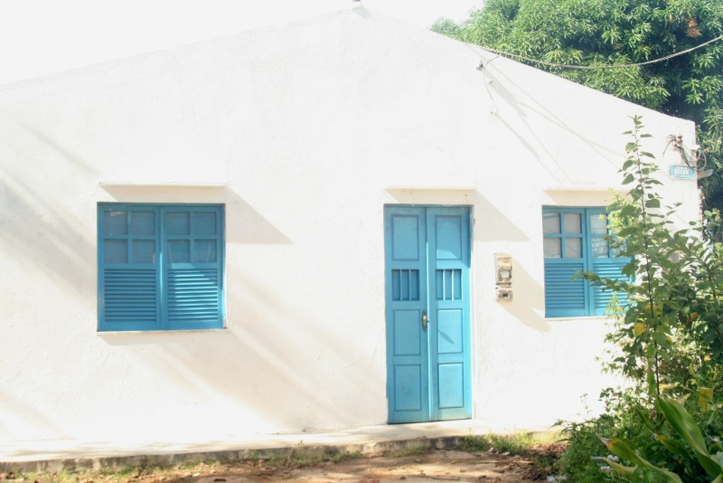

Os Terreiros Matrizes
Zògodò Bogum Malê Rundó
Localizado no bairro Engenho Velho, em Salvador - BA, fundado em 1858. Seu patrono é o Vodum Sogbo, e é conhecido como Terreiro do Bogum.

Zògbodò Malè Bogun Sejá Húnde
Localizado na cidade de Cachoeira - BA, fundado em 1858. Seu patrono é o Vodum Dan, e é conhecido como Roça do Ventura.